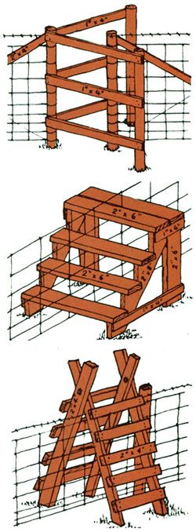

The next time you set out to build a fence, consider . . .
When a farmsteader needs to keep his or her livestock contained-but doesn't want to install a gate . . . which might get left open-a stile is the logical solution.
Of the three types shown here, one isn't really a stile at all, but rather a "walk-through" that lets people enter and exit but keeps horses and cattle inside.
When you build one of the fancy fence-crossings, use two-inch-thick lumber and secure it with 16- or 20-penny nails. Ring shank or screw shank nails are the best for such a purpose, since they don't work loose as quickly as other kinds of fasteners. (Of course, if you can afford the additional cost of bolts and lag screws, they'll make your construction even stronger.)
So build yourself a stylish stile . . . and never have to say "Remember to close the gate! " again.
|
 |
|
|